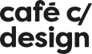
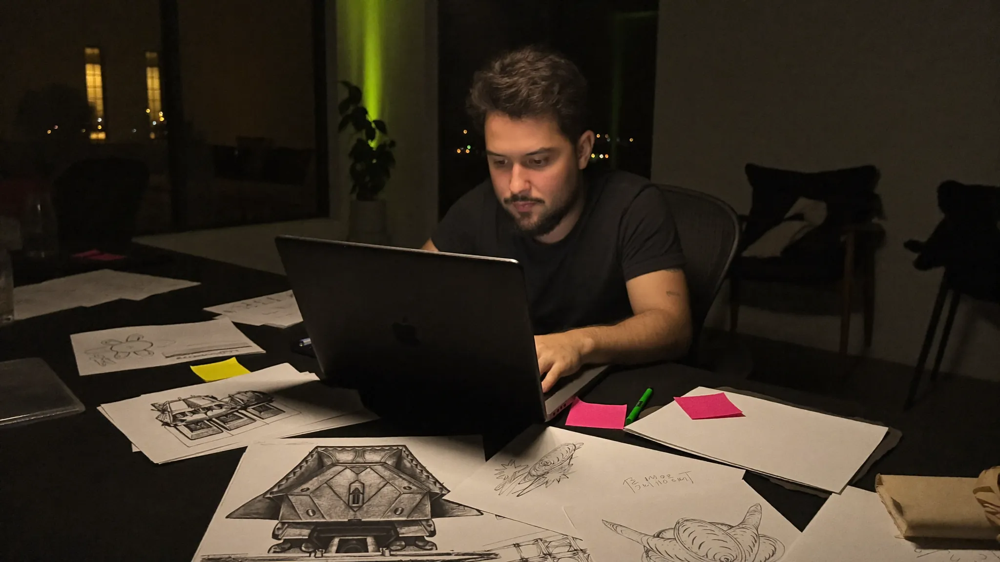
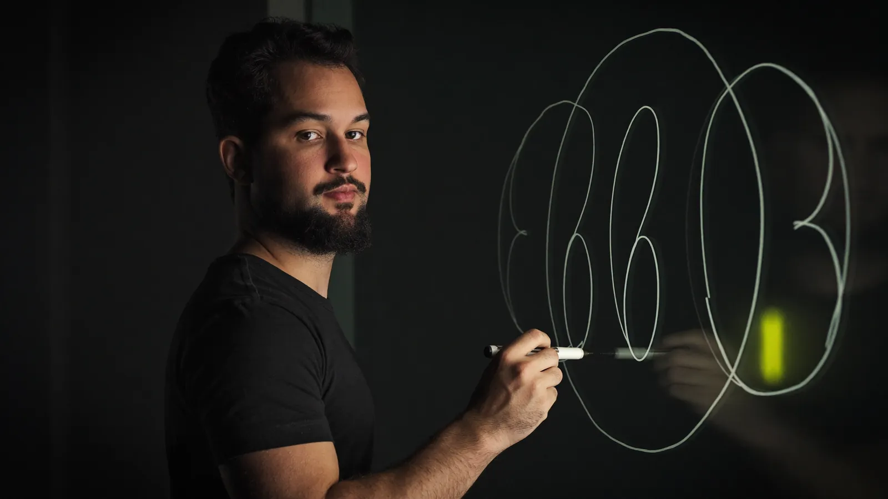
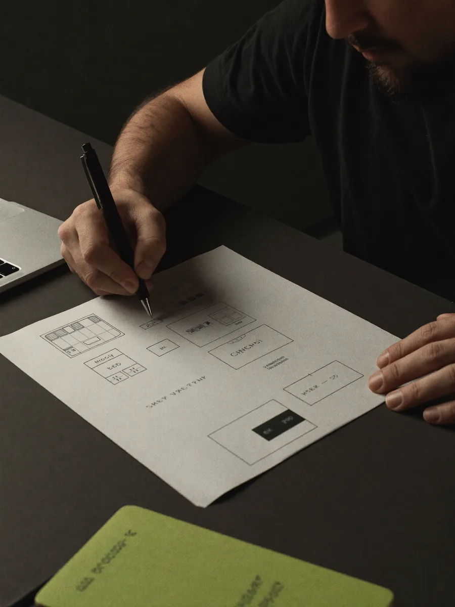
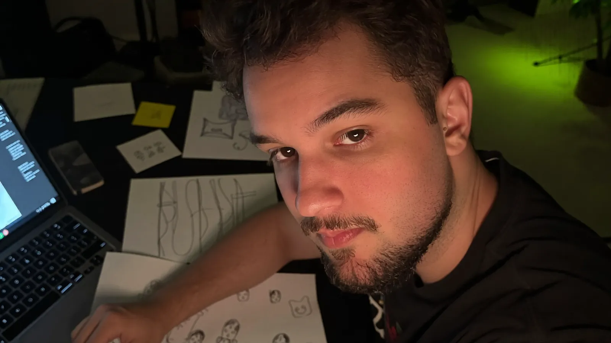

Brand
Quando a marca não acompanha o que a empresa virou.
- Posicionamento e plataforma de marca
- Naming, identidade verbal e visual
- Brand experience
Descobrimos o que trava o crescimento da sua empresa e construímos a solução. A primeira conversa é por nossa conta.
Empresas que já construíram com a gente

Mais clientes. Mais campanhas. Mais ferramentas. Mais gente. E ainda assim a sensação de que a empresa parou de avançar. Isso não é falta de esforço. É falta de direção.
Onde isso aparece na sua empresa?
Sua empresa chegou até aqui. Agora precisa de outra coisa.
Growth sem direção só acelera o problema.
Tecnologia não substitui direção. Aplica direção.
Nem agência, nem consultoria, nem software house. Pensamos como consultoria, construímos como estúdio e usamos tecnologia como músculo.
Quando a marca não acompanha o que a empresa virou.
Quando o crescimento trava ou depende de um canal só.
Quando a operação não acompanha a escala.
Não sabe por onde começar? É para isso que serve a primeira conversa. Agendar uma call
Cada etapa tem um critério de entrada, uma atividade central e um critério de saída. Nada avança por intuição.
Diagnóstico
Depois de Evoluir, o loop recomeça no Notar, geralmente com um problema mais sofisticado. O cliente volta porque quer, não porque está preso.
Problema ainda sem forma? Nesse caso, começamos por um Lab Sprint: um diagnóstico de 2 a 4 semanas antes de qualquer proposta.
Agendar uma call

Comecei no design. Fui para o marketing. Cheguei à inteligência artificial. Em cada etapa, vi a mesma coisa: marca, crescimento e tecnologia trabalhando separados, e a empresa pagando a conta.
A NativeLab nasceu para juntar os três numa única direção. Na prática, isso significa entrar no negócio, entender o que trava o avanço e construir junto, sem deixar dependência.
O processo foi leve, interativo e com muito profissionalismo.
Café c/ Design, Belo Horizonte (MG)



Você conta o que está travando. A gente pergunta mais do que apresenta. No fim, você sabe qual é o próximo passo, com a gente ou não.
Pelo formulário ou pelo WhatsApp, no horário que for melhor para você.
Uma conversa sobre o seu negócio, não uma apresentação sobre o nosso.
Uma leitura inicial do problema e o caminho para resolvê-lo.
É uma conversa com o nosso time sobre o momento da sua empresa: o que está travando, o que já foi tentado e onde você quer chegar. Não tem custo nem compromisso.
Não. Entendemos o problema primeiro e construímos só o que ele pedir: um pilar ou a combinação dos três.
Os dois. Pensamos como consultoria e construímos como estúdio. A solução sai do papel e entra em operação no seu negócio.
Nesse caso, começamos por um Lab Sprint: um diagnóstico de 2 a 4 semanas que aponta onde agir antes de qualquer proposta. Se fizer sentido para o seu caso, falamos dele na call.
Estruturamos tudo para o seu time operar e evoluir sem depender da gente. Não deixamos dependência, deixamos capacidade.
Para empresas que já passaram da fase inicial e chegaram ao ponto em que fazer mais parou de funcionar e fazer diferente virou obrigatório.
Preencha e envie pelo WhatsApp. O nosso time responde por lá para marcar a call. Sem custo e sem compromisso.
Chamar no WhatsApp